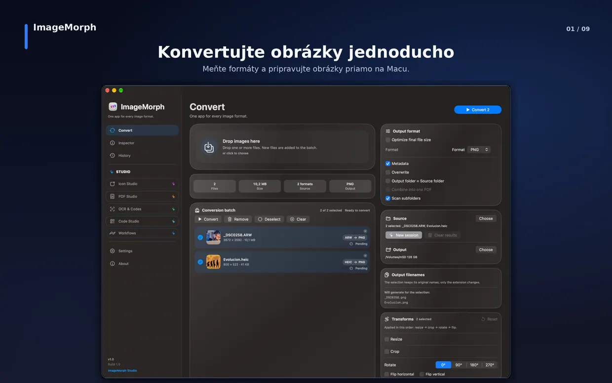
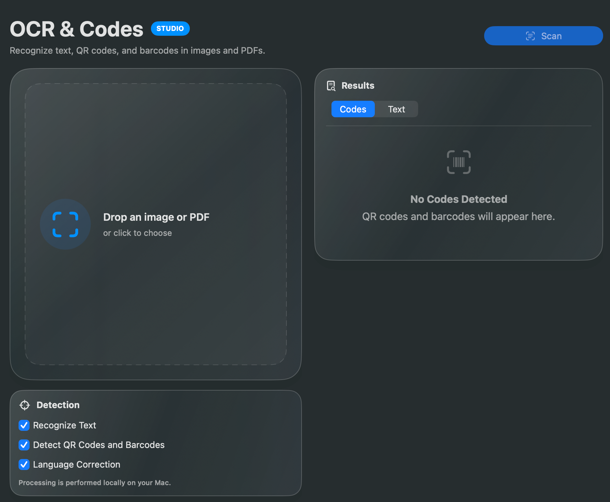
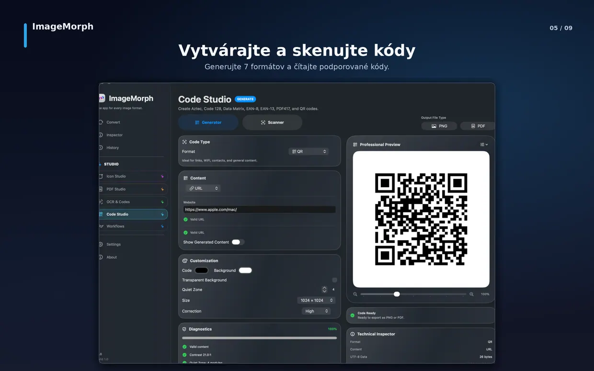
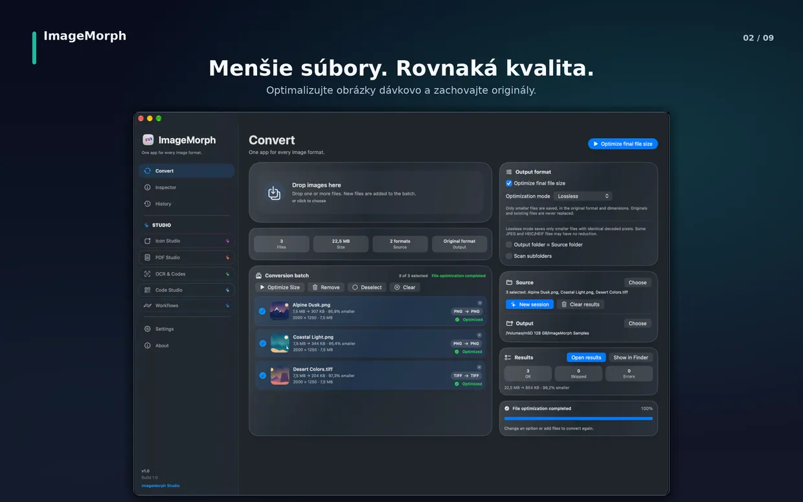
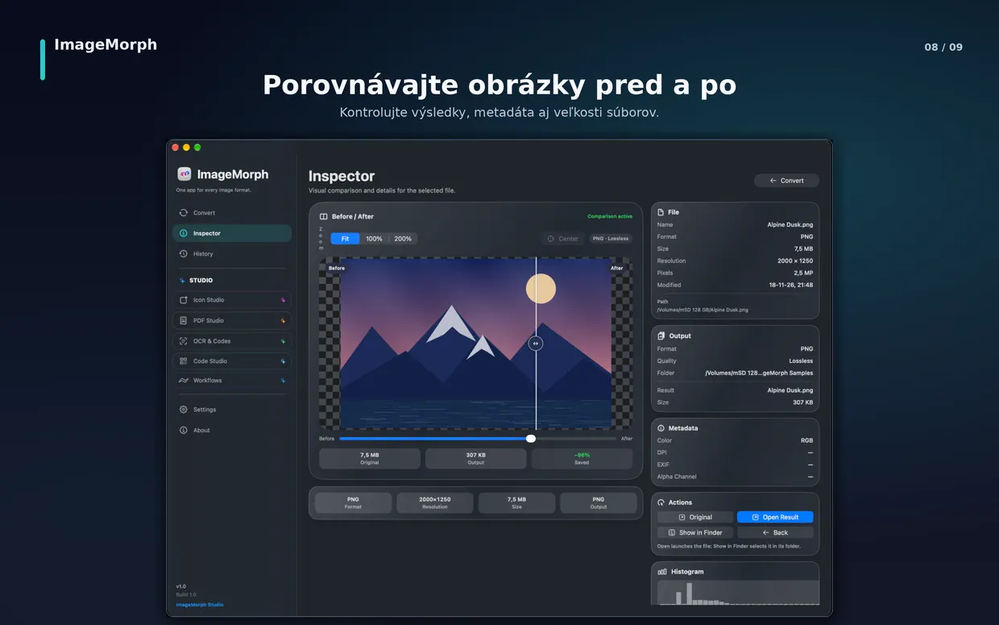
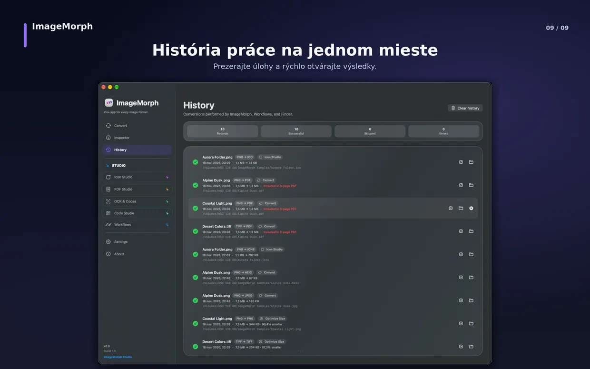
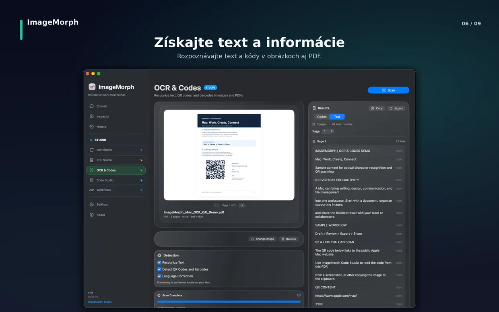
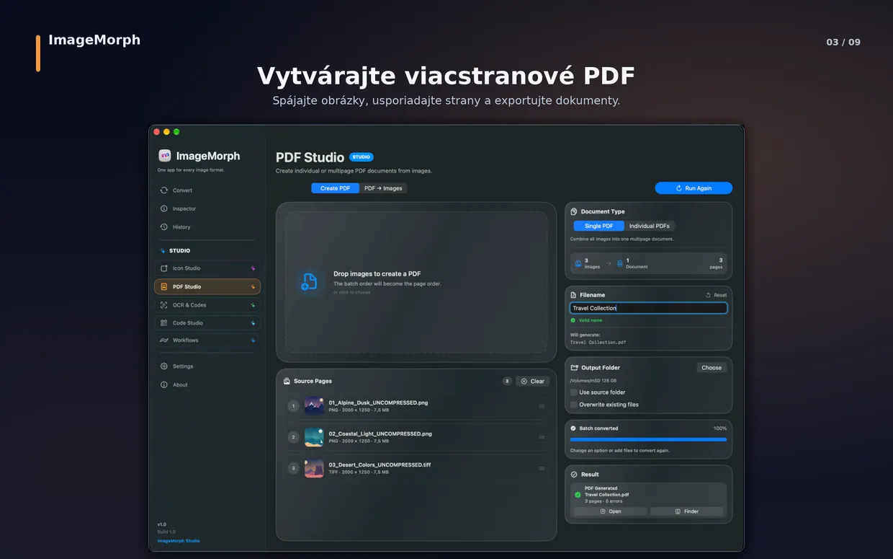
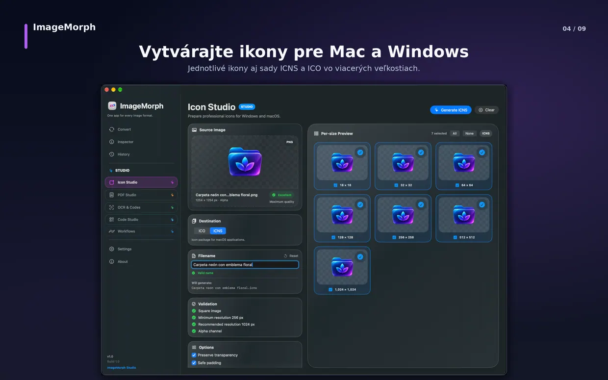
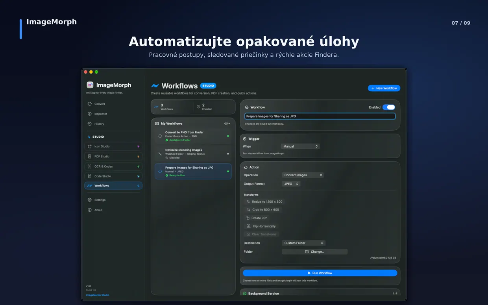

JPEG · PNG · HEIC · TIFF
JPEG, PNG, HEIC a TIFF jednotlivo aj dávkovo.

Konvertujte, meňte veľkosť a optimalizujte obrázky. Vytvárajte PDF a automatizujte opakované úlohy na Macu.
Pripravujeme uvedenie do Mac App Store.

Konvertujte, meňte veľkosť a optimalizujte obrázky. Vytvárajte PDF a automatizujte opakované úlohy na Macu.

Rozpoznávajte text v obrázkoch a viacstranových PDF, kontrolujte a exportujte výsledky.
Prečítajte QR z e-mailu alebo PDF na Macu a pred otvorením skontrolujte cieľovú adresu.


Náhľad URL nezaručuje bezpečný web. Skontrolujte doménu a nezadávajte osobné údaje na podozrivých stránkach.
Nástroje na kódyJPEG, PNG, HEIC a TIFF jednotlivo aj dávkovo.

Upravte rozmery a pomery strán obrázkov podľa potreby a podľa možnosti zachovajte pôvodný pomer.

Podporovaná bezstratová alebo stratová optimalizácia; výstup len ak je menší.

Skontrolujte formát, rozmery a metadáta. Po konverzii porovnajte výsledok s originálom.

Pozrite si operácie a otvorte výstupy alebo ich zobrazte vo Finderi, ak ešte existujú.

Studio spája OCR, čítanie kódov, nástroje PDF, ikony a automatizáciu. Jednorazový nákup bez predplatného.
Studio je voliteľný trvalý nákup v aplikácii.

Rozpoznávajte text v obrázkoch a viacstranových PDF, kontrolujte a exportujte výsledky.


Čítajte kódy zo schránky, obrázkov, PDF či priečinkov alebo ich zachyťte kompatibilnými zariadeniami. Pred otvorením skontrolujte obsah a odkazy.


Vytvárajte viacstranové PDF, exportujte stránky ako obrázky a upravujte otočenie.

Vytvárajte ICO a ICNS a kontrolujte veľkosti pred exportom.


Generujte QR, Code128, Data Matrix, EAN, PDF417 a Aztec do PNG alebo PDF.

Ukladajte pracovné postupy, sledujte priečinky a spúšťajte akcie Finderu.

| Funkcia | Free | Studio |
|---|---|---|
| Konverzia, rozmery, optimalizácia | Zahrnuté | Zahrnuté |
| Front, Inspector, porovnanie, histogram | Zahrnuté | Zahrnuté |
| Základná tvorba PDF | Zahrnuté | Zahrnuté |
| PDF Studio a export strán | — | Zahrnuté |
| OCR a rozpoznanie kódov | — | Zahrnuté |
| Generovanie kódov a kamera/skener | — | Zahrnuté |
| Súpravy ICO a ICNS | — | Zahrnuté |
| Postupy, sledované priečinky, rýchle akcie Findera | — | Zahrnuté |
Miestna cena, prístup Studio a nárok na skúšku sú zobrazené v aplikácii. Nákupy a obnovenie spravuje Apple.
Konverzia, optimalizácia, tvorba PDF a OCR prebiehajú na vašom Macu. Obsah súborov sa neposiela službe skúšobného prístupu Studio. Prístup k súborom, priečinkom, kamerám a skenerom vyžaduje povolenie; nastavenia, história, záložky a záznamy s názvami, cestami a chybami môžu zostať lokálne.
Prečítať zásady ochrany súkromia